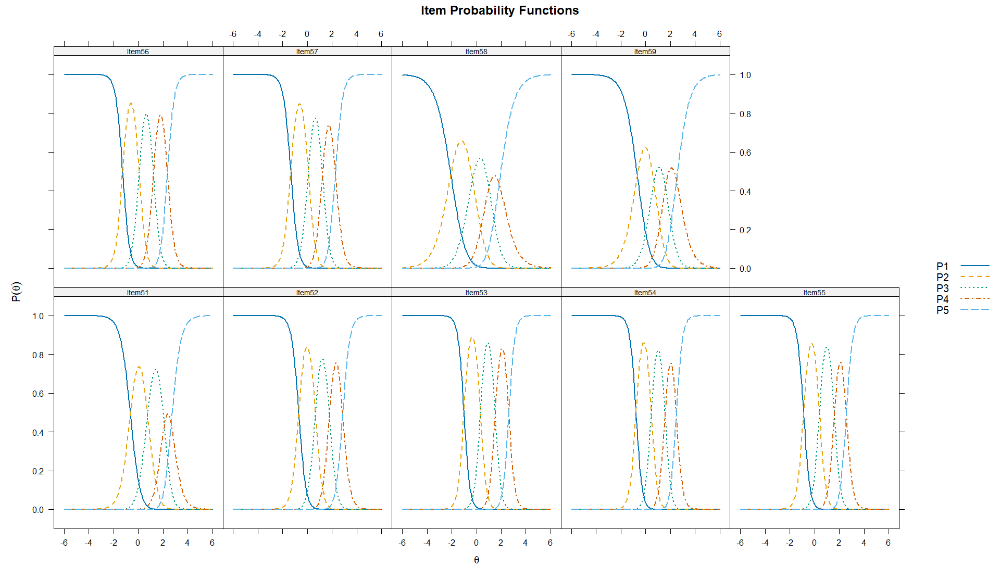
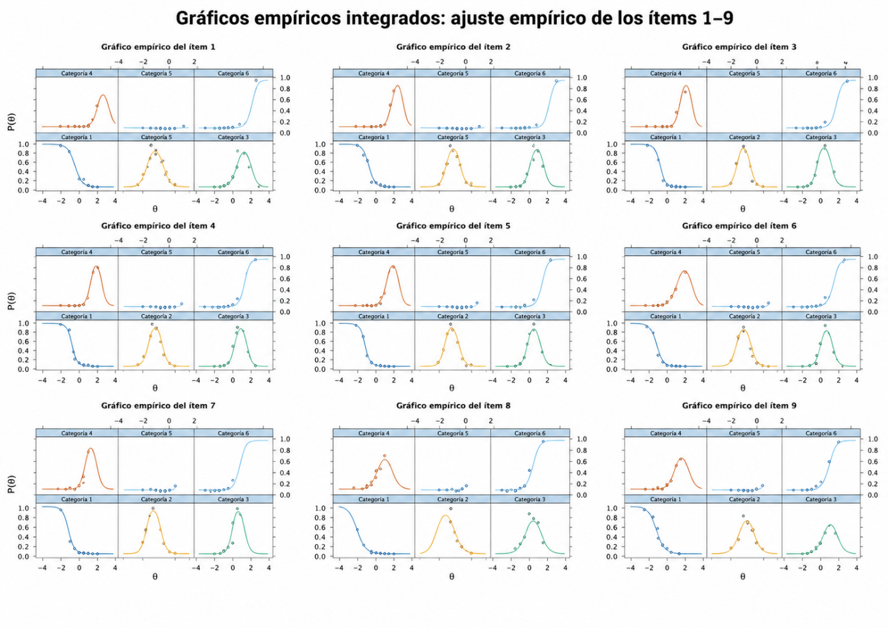
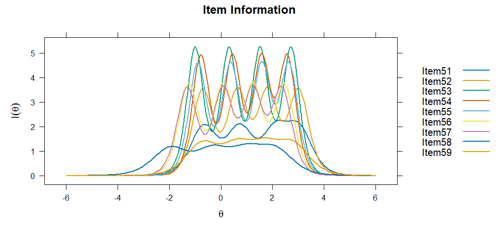
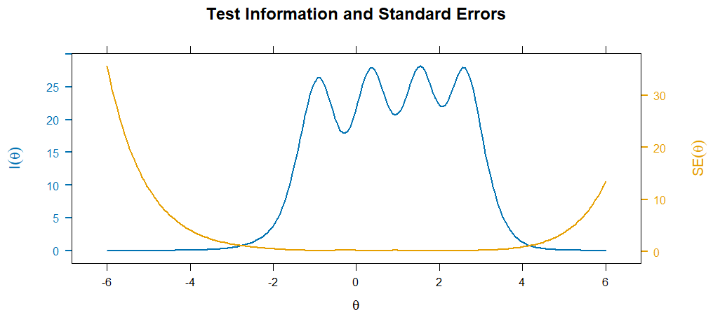
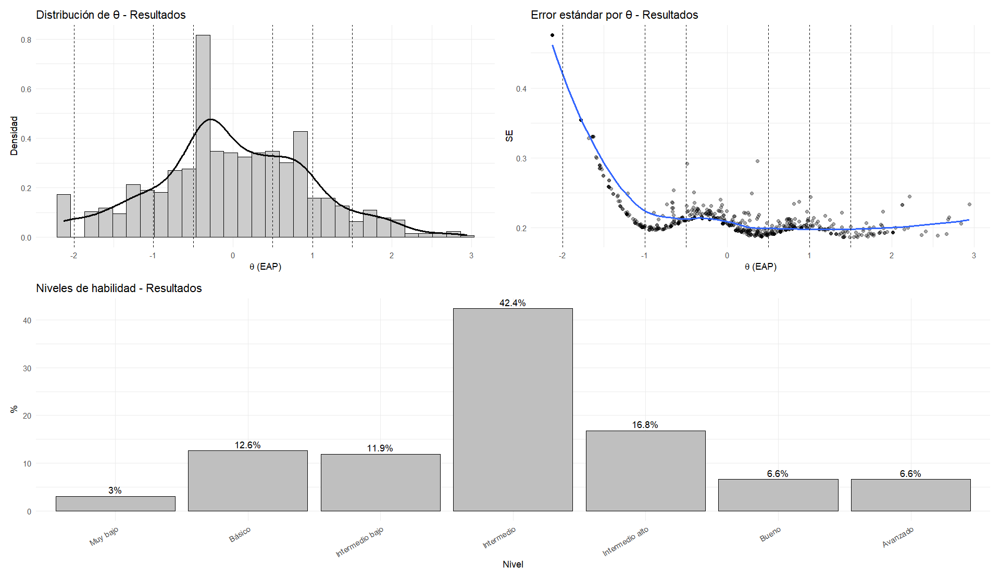
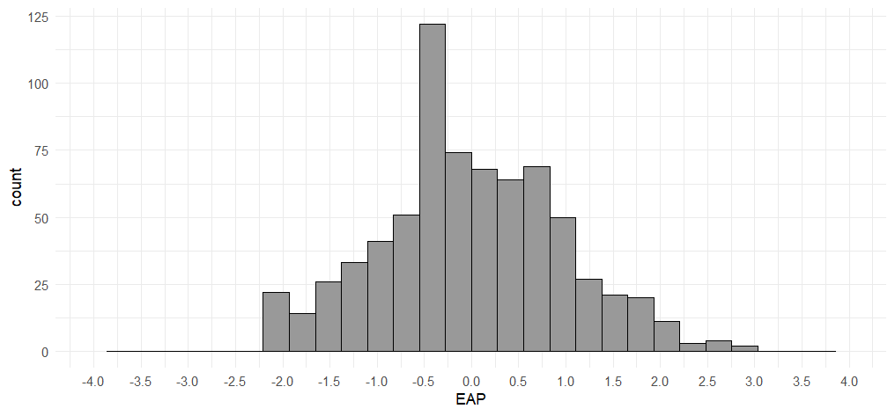
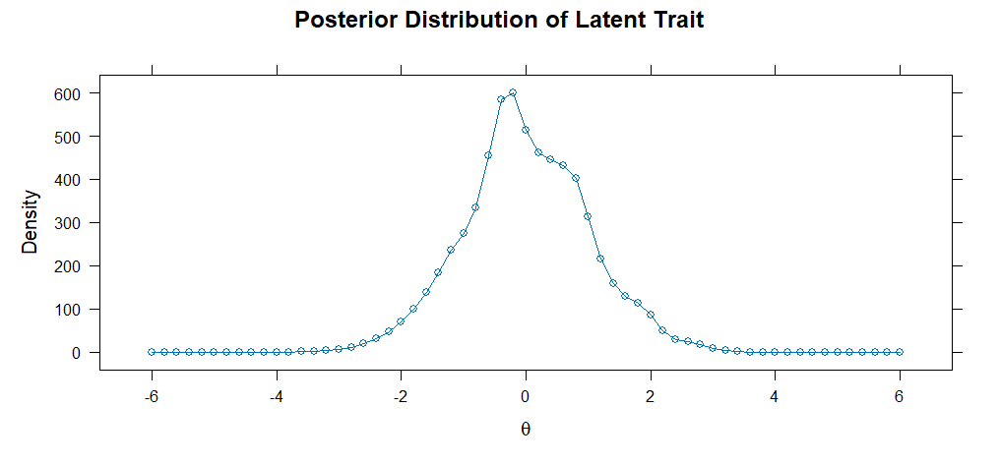
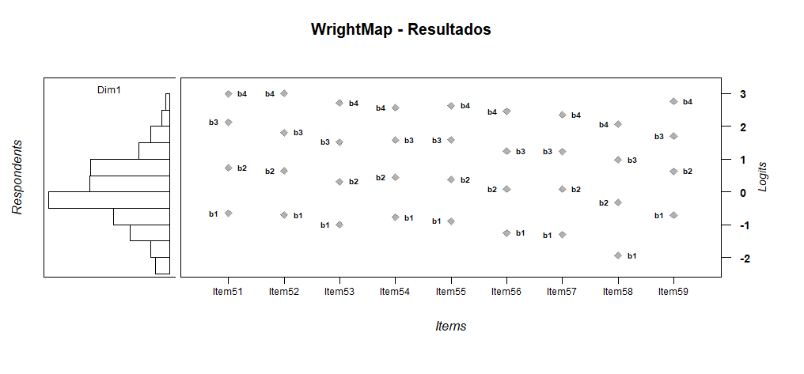
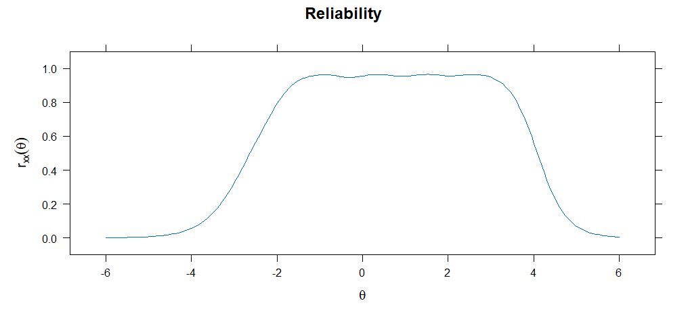

Modelo de Crédito Parcial
Estimación de umbrales del PCM
Los parámetros del PCM para el constructo Resultados muestran que todos los ítems presentan una discriminación fija de a = 1, propia del modelo Rasch/PCM; por tanto, la interpretación se centra en los umbrales de transición entre categorías. En general, los umbrales se ordenan progresivamente (b1 < b2 < b3 < b4), lo que respalda un funcionamiento ordinal adecuado de las categorías de respuesta: a mayor nivel del rasgo latente, mayor probabilidad de seleccionar categorías superiores. Los ítems 56, 57 y 58 presentan umbrales iniciales más bajos, por lo que aportan información en niveles bajos e intermedios del constructo. En cambio, los ítems 51, 52, 53, 54 y 55 muestran umbrales superiores elevados, especialmente en b3 y b4, lo que indica que alcanzar las categorías altas requiere niveles elevados de habilidad en el análisis e interpretación de resultados. En conjunto, los reactivos cubren un rango amplio del continuo latente, aunque las categorías superiores parecen ser exigentes para esta muestra.
| a | b1 | b2 | b3 | b4 | Item |
|---|---|---|---|---|---|
| 1 | -1.718 | 1.957 | 5.376 | 6.398 | Item51 |
| 1 | -2.001 | 1.843 | 4.819 | 7.257 | Item52 |
| 1 | -2.958 | 0.942 | 4.258 | 6.912 | Item53 |
| 1 | -2.262 | 1.352 | 4.395 | 6.457 | Item54 |
| 1 | -2.598 | 1.112 | 4.456 | 6.625 | Item55 |
| 1 | -3.587 | 0.245 | 3.404 | 6.217 | Item56 |
| 1 | -3.754 | 0.242 | 3.376 | 5.907 | Item57 |
| 1 | -4.723 | -0.815 | 2.275 | 4.411 | Item58 |
| 1 | -1.715 | 1.591 | 3.951 | 5.916 | Item59 |
Retrotraducción factorial del PCM
La retrotraducción factorial del PCM para el constructo Resultados mostró comunalidades elevadas y homogéneas en todos los ítems (h² = .939). Esto indica que los reactivos comparten una proporción importante de varianza con el rasgo latente y respaldan una estructura altamente consistente para el constructo. No obstante, dado que el PCM fija la discriminación de los ítems en a = 1, esta homogeneidad debe interpretarse con cautela y complementarse con modelos más flexibles, como el GPCM o el GRM, para valorar diferencias específicas entre reactivos.
Modelo de Crédito Parcial Generalizado
Estimación de parámetros del GPCM
Los parámetros del GPCM para el constructo Resultados muestran discriminaciones diferenciadas entre ítems, con valores de a = 1.552–4.170. En general, los reactivos presentan una capacidad discriminativa adecuada a muy alta, destacando Item53 (a = 4.170), Item54 (a = 4.021), Item55 (a = 3.871), Item56 (a = 3.600) e Item52 (a = 3.436), lo que indica que estos ítems diferencian con mayor precisión entre participantes con distintos niveles del rasgo latente. Los umbrales se ordenan progresivamente en todos los reactivos, lo que respalda el funcionamiento ordinal de las categorías de respuesta. El Item58 presentó la discriminación más baja (a = 1.552), aunque todavía funcional, y sus umbrales se ubican en niveles más bajos del continuo, por lo que aporta información en niveles iniciales del constructo. En conjunto, el GPCM sugiere que los ítems del constructo Resultados funcionan adecuadamente, con categorías progresivas y alta capacidad discriminativa en la mayoría de los reactivos.
| a | b1 | b2 | b3 | b4 | Item |
|---|---|---|---|---|---|
| 2.464 | -0.640 | 0.759 | 2.117 | 2.668 | Item51 |
| 3.436 | -0.701 | 0.664 | 1.795 | 2.860 | Item52 |
| 4.170 | -1.012 | 0.327 | 1.527 | 2.623 | Item53 |
| 4.021 | -0.776 | 0.476 | 1.587 | 2.490 | Item54 |
| 3.871 | -0.898 | 0.395 | 1.611 | 2.563 | Item55 |
| 3.600 | -1.270 | 0.087 | 1.237 | 2.367 | Item56 |
| 3.377 | -1.344 | 0.088 | 1.236 | 2.271 | Item57 |
| 1.552 | -2.077 | -0.312 | 1.013 | 1.838 | Item58 |
| 1.805 | -0.671 | 0.687 | 1.619 | 2.508 | Item59 |
Las CCI del GPCM para el constructo Resultados muestran un funcionamiento ordinal adecuado de las categorías de respuesta. En general, la categoría P1 predomina en niveles bajos de θ, las categorías intermedias se activan de forma progresiva y la categoría P5 aumenta en niveles altos del rasgo latente. Los ítems 52, 53, 54, 55, 56 y 57 presentan curvas más pronunciadas y separadas, lo que coincide con sus mayores valores de discriminación y sugiere una buena capacidad para diferenciar participantes con niveles cercanos del constructo. El Item58 muestra curvas más amplias y menos pronunciadas, coherente con su menor discriminación relativa, por lo que aporta información en un rango más bajo y amplio del continuo. En conjunto, las CCI respaldan el funcionamiento progresivo de los reactivos del constructo Resultados, con mayor precisión en niveles bajos-medios, medios y altos del rasgo.

Retrotraducción factorial del Modelo GPCM
La retrotraducción factorial del GPCM para el constructo Resultados mostró cargas factoriales muy elevadas en todos los ítems (λ = .922–.988), así como comunalidades altas (h² = .850–.976). Esto indica que los reactivos se asocian fuertemente con el factor latente y que una proporción importante de su varianza es explicada por el constructo. Los ítems con mayores cargas fueron Item53 (λ = .988), Item54 (λ = .987), Item55 (λ = .986), Item56 (λ = .984) e Item52 e Item57 (λ = .982). El valor más bajo correspondió al Item58 (λ = .922; h² = .850), aunque todavía se encuentra en un rango claramente adecuado. En conjunto, los resultados respaldan una estructura unidimensional fuerte y coherente para el constructo Resultados bajo el GPCM.
| Item | F1 | h2 |
|---|---|---|
| Item51 | 0.967 | 0.935 |
| Item52 | 0.982 | 0.965 |
| Item53 | 0.988 | 0.976 |
| Item54 | 0.987 | 0.974 |
| Item55 | 0.986 | 0.972 |
| Item56 | 0.984 | 0.968 |
| Item57 | 0.982 | 0.964 |
| Item58 | 0.922 | 0.850 |
| Item59 | 0.940 | 0.884 |
Modelo de Respuesta Graduada
Estimación de parámetros del GRM
Los parámetros del GRM para el constructo Resultados muestran discriminaciones elevadas en todos los ítems (a = 2.147–4.575), lo que indica una alta capacidad para diferenciar entre participantes con distintos niveles del rasgo latente. Los reactivos con mayor discriminación fueron Item53 (a = 4.575), Item54 (a = 4.432), Item55 (a = 4.289), Item56 (a = 3.866), Item57 (a = 3.791) e Item52 (a = 3.760). Los umbrales se ordenaron progresivamente en todos los ítems, lo que respalda el funcionamiento ordinal de las categorías de respuesta. El Item58 presentó la menor discriminación relativa (a = 2.147), aunque todavía adecuada, y sus umbrales se ubican en niveles más bajos del continuo, por lo que aporta información en niveles iniciales del constructo. En conjunto, el GRM evidencia un funcionamiento sólido de los ítems del constructo Resultados, con alta discriminación y categorías bien organizadas a lo largo del rasgo latente.
| a | b1 | b2 | b3 | b4 | Item |
|---|---|---|---|---|---|
| 2.865 | -0.657 | 0.733 | 2.128 | 2.995 | Item51 |
| 3.760 | -0.706 | 0.643 | 1.809 | 3.007 | Item52 |
| 4.575 | -0.998 | 0.317 | 1.520 | 2.716 | Item53 |
| 4.432 | -0.775 | 0.451 | 1.579 | 2.571 | Item54 |
| 4.289 | -0.890 | 0.379 | 1.587 | 2.631 | Item55 |
| 3.866 | -1.253 | 0.080 | 1.245 | 2.457 | Item56 |
| 3.791 | -1.309 | 0.079 | 1.235 | 2.352 | Item57 |
| 2.147 | -1.947 | -0.324 | 0.981 | 2.060 | Item58 |
| 2.331 | -0.711 | 0.626 | 1.699 | 2.761 | Item59 |
Las CCI del GRM para el constructo Resultados muestran un funcionamiento ordinal adecuado de las categorías de respuesta. En general, la categoría P1 predomina en niveles bajos de θ, las categorías intermedias se activan de manera progresiva y la categoría P5 aumenta en niveles altos del rasgo latente. Los ítems 52, 53, 54, 55, 56 y 57 presentan curvas más pronunciadas y claramente diferenciadas, lo que coincide con sus altos valores de discriminación y sugiere una fuerte capacidad para distinguir participantes con niveles cercanos del constructo. El Item58 muestra curvas más amplias y menos pronunciadas, coherente con su menor discriminación relativa, aunque conserva un funcionamiento ordinal adecuado. En conjunto, las CCI respaldan el funcionamiento progresivo y altamente discriminativo de los reactivos del constructo Resultados, con mayor precisión en niveles bajos-medios, medios y medio-altos del rasgo.
Retrotraducción factorial del GRM
La retrotraducción factorial del GRM para el constructo Resultados mostró cargas factoriales elevadas en todos los ítems (λ = .784–.937), así como comunalidades adecuadas y altas (h² = .614–.878). Esto indica que los reactivos se asocian de manera consistente con el factor latente y que una proporción importante de su varianza es explicada por el constructo. Los ítems con mayores cargas fueron Item53 (λ = .937), Item54 (λ = .934), Item55 (λ = .929), Item56 (λ = .915) e Item57 (λ = .912), mientras que el valor más bajo correspondió al Item58 (λ = .784; h² = .614), aunque todavía se mantiene en un rango aceptable. Además, la varianza explicada por el factor fue elevada (79.1%). En conjunto, estos resultados respaldan una estructura predominantemente unidimensional y coherente para el constructo Resultados bajo el GRM.
| Item | F1 | h2 |
|---|---|---|
| Item51 | 0.860 | 0.739 |
| Item52 | 0.911 | 0.830 |
| Item53 | 0.937 | 0.878 |
| Item54 | 0.934 | 0.871 |
| Item55 | 0.929 | 0.864 |
| Item56 | 0.915 | 0.838 |
| Item57 | 0.912 | 0.832 |
| Item58 | 0.784 | 0.614 |
| Item59 | 0.808 | 0.652 |
Unidimensionalidad del constructo mediante AFC
La unidimensionalidad del constructo Resultados se evaluó inicialmente mediante AFC ordinal con estimador WLSMV. En primer lugar, el SRMR = .042 se ubicó claramente por debajo del punto de referencia convencional de .08, lo que indica baja discrepancia residual entre la matriz observada y la reproducida por el modelo; por tanto, este índice aporta evidencia favorable de unidimensionalidad esencial. Además, los índices incrementales escalados fueron adecuados (CFI = .985; TLI = .980), y las cargas factoriales estandarizadas fueron elevadas en todos los ítems (λ = .779–.919), lo que muestra una asociación clara de los reactivos con el factor latente. No obstante, el RMSEA fue elevado en sus distintas versiones, por lo que el ajuste global no puede considerarse plenamente satisfactorio. Los índices de modificación sugieren asociaciones residuales importantes entre algunos pares de ítems, principalmente Item56–Item57, Item51–Item52 e Item58–Item59, lo que podría indicar redundancia conceptual o subcomponentes internos dentro del constructo. En conjunto, los resultados respaldan una estructura predominantemente unidimensional para Resultados, aunque con evidencia puntual de dependencia residual entre algunos reactivos que podrían sugerir la existencia de que el factor se puede fragmentar en dimensiones más específicas.
Los índices de ajuste TRI mediante M2 mostraron mejores resultados para los modelos flexibles en comparación con el PCM. El GPCM presentó el RMSEA más bajo (.138), el CFI más alto (.969) y el TLI más alto (.959), además de un SRMSR bajo (.043), igual al observado en el GRM. El PCM mostró el peor ajuste residual (SRMSR = .094) y los criterios de información más altos. La comparación entre PCM y GPCM fue significativa (X² = 257.628, gl = 8, p < .001), lo que indica mejora al permitir discriminaciones diferenciadas. No obstante, al considerar los criterios de información, el GRM presentó los valores más bajos de AIC, SABIC y BIC, además del mayor logLik. En conjunto, aunque el GPCM mostró índices globales ligeramente superiores, los criterios comparativos respaldan al GRM como el modelo con mejor ajuste relativo para el constructo Resultados.
Independencia local del modelo GRM
La independencia local del modelo GRM para el constructo Resultados se evaluó mediante LD de Chen y Thissen (1997) y Q3 de Yen (1984). En el análisis LD, varios pares superaron el punto de referencia de 10.83; sin embargo, la interpretación se centró en las correlaciones residuales estandarizadas reportadas por mirt como coeficientes V de Cramer con signo. Bajo los criterios de Cohen (1988), la mayoría de las asociaciones fueron pequeñas o bajas al ubicarse por debajo de .30 en valor absoluto. No obstante, algunos pares mostraron magnitudes superiores, especialmente Item56–Item57 (r = .749), Item53–Item57 (r = -.703), Item55–Item57 (r = -.501), Item54–Item57 (r = -.453), Item53–Item54 (r = .381) e Item54–Item55 (r = -.376), lo que sugiere dependencia residual específica entre algunos reactivos.
Por su parte, el índice Q3 mostró asociaciones residuales de menor magnitud. Los pares más relevantes fueron Item53–Item56 (Q3 = -.298), Item51–Item55 (Q3 = -.286), Item53–Item57 (Q3 = -.281), Item52–Item57 (Q3 = -.275), Item51–Item57 (Q3 = -.262), Item54–Item56 (Q3 = -.262), Item52–Item56 (Q3 = -.257), Item51–Item52 (Q3 = .253) e Item58–Item59 (Q3 = .232), varios de ellos por encima del punto de referencia de Q3 > .2236. En conjunto, los resultados sugieren que la independencia local no se cumple plenamente en todos los pares; sin embargo, las dependencias se concentran en reactivos específicos, especialmente alrededor de Item56–Item57 y pares cercanos conceptualmente. Por tanto, estos hallazgos deben interpretarse como evidencia de posible redundancia o subcomponentes internos del constructo Resultados, más que como un problema generalizado del modelo.
Ajuste al ítem del modelo GRM
El ajuste al ítem del modelo GRM para el constructo Resultados fue, en general, aceptable. Los valores de outfit (.794–1.024) e infit (.875–.984) se ubicaron en rangos adecuados y cercanos al valor esperado de 1, lo que indica ausencia de desajuste práctico severo. Aunque algunos ítems presentaron valores significativos en S_X2 o X2*, los valores de RMSEA.S_X2 fueron bajos o moderados-bajos (.000–.052), por lo que las discrepancias parecen de magnitud limitada. Los ítems 51, 52, 54, 56, 58 y 59 mostraron significancia en S_X2, mientras que X2* señaló especialmente los ítems 53, 55, 56, 57 y 58. No obstante, estas señales no se acompañan de valores problemáticos de infit u outfit. En conjunto, los resultados respaldan un ajuste aceptable de los ítems del constructo Resultados al GRM, con señales puntuales de revisión, pero sin evidencia suficiente para justificar la eliminación de reactivos.
| item | Zh | outfit | z.outfit | infit | z.infit | S_X2 | df.S_X2 | RMSEA.S_X2 | p.S_X2 | X2_star | p.X2_star |
|---|---|---|---|---|---|---|---|---|---|---|---|
| Item51 | 1.421 | 0.913 | -0.987 | 0.929 | -1.186 | 85.993 | 29 | 0.05220874 | 1.49E-07 | 63.979 | 0.017 |
| Item52 | 2.069 | 0.799 | -1.698 | 0.885 | -2.001 | 49.043 | 27 | 0.03365039 | 0.005857122 | 35.699 | 0.052 |
| Item53 | 2.150 | 0.800 | -1.754 | 0.880 | -1.950 | 20.927 | 23 | 0 | 0.585574376 | 308.552 | 0.002 |
| Item54 | 2.313 | 0.794 | -1.562 | 0.875 | -2.069 | 39.419 | 25 | 0.02828309 | 0.033429605 | 67.126 | 0.013 |
| Item55 | 2.067 | 0.813 | -1.587 | 0.883 | -1.919 | 30.290 | 24 | 0.01906559 | 0.175326902 | 140.115 | 0.006 |
| Item56 | 2.211 | 0.860 | -1.996 | 0.878 | -2.119 | 41.014 | 26 | 0.02830086 | 0.030930739 | 83.174 | 0.008 |
| Item57 | 2.134 | 0.913 | -1.258 | 0.918 | -1.394 | 30.517 | 27 | 0.01344185 | 0.291415362 | 8623.241 | 0 |
| Item58 | 1.035 | 1.024 | 0.432 | 0.984 | -0.254 | 105.370 | 43 | 0.04485253 | 3.76E-07 | 106.420 | 0.0012 |
| Item59 | 1.110 | 0.909 | -1.190 | 0.961 | -0.617 | 88.258 | 38 | 0.04282936 | 7.10E-06 | 26.892 | 0.095 |
La evaluación visual del ajuste empírico de los ítems del constructo Resultados mostró una correspondencia general adecuada entre las curvas estimadas por el modelo GRM y las proporciones empíricas observadas. En la mayoría de los ítems, las categorías de respuesta presentan un patrón ordenado: la categoría 1 predomina en niveles bajos de θ, las categorías intermedias se ubican en zonas medias del continuo y las categorías superiores aumentan conforme se incrementa el nivel del rasgo latente. Los ítems 1 a 7 muestran un ajuste visual más claro, con puntos empíricos cercanos a las curvas teóricas en la mayoría de las categorías. En los ítems 8 y 9 se observan ligeras discrepancias en algunas categorías intermedias y superiores, lo cual puede explicarse por menor frecuencia de respuesta en ciertos niveles del continuo. En conjunto, los gráficos empíricos respaldan un funcionamiento razonable de los ítems del constructo Resultados, sin evidencia visual fuerte de mal ajuste generalizado, aunque con señales puntuales que conviene revisar junto con los índices cuantitativos de ajuste al ítem.

Ajuste por persona
El ajuste a la persona del modelo GRM para el constructo Resultados mostró algunos casos con patrones de respuesta atípicos, reflejados en valores elevados de outfit, infit y estadísticos Zh negativos. Los casos con mayor desajuste presentaron combinaciones poco esperadas de respuestas bajas en algunos ítems y respuestas altas en otros, por ejemplo, participantes que respondieron con puntuaciones mínimas en varios reactivos iniciales y puntuaciones altas en reactivos posteriores. Sin embargo, este comportamiento no debe interpretarse automáticamente como error, falta de atención o invalidez de la respuesta. En este constructo, el patrón irregular puede ser teóricamente plausible, ya que los estudiantes pueden dominar algunos componentes relacionados con los resultados de investigación y, al mismo tiempo, desconocer otros. Es decir, las variables evaluadas no necesariamente son interdependientes en la experiencia real del estudiante. Por tanto, el desajuste a la persona debe entenderse como una señal diagnóstica de heterogeneidad en los perfiles de conocimiento, más que como un criterio directo de exclusión de casos. En conjunto, los resultados sugieren que algunos participantes presentan trayectorias de respuesta diferenciadas dentro del constructo Resultados, lo cual puede reflejar aprendizajes parciales, dominio desigual de contenidos o experiencias formativas heterogéneas.
Curva de información del ítem (IIF)
La curva de información del ítem para el constructo Resultados muestra que la mayor precisión de medición se concentra aproximadamente entre θ = -1.5 y θ = 3.0, es decir, en niveles bajos-medios, medios y medio-altos del rasgo latente. Los ítems con mayor aporte de información son Item53 (a1 = 4.575), Item54 (a1 = 4.432), Item55 (a1 = 4.289), Item56 (a1 = 3.866), Item57 (a1 = 3.791) e Item52 (a1 = 3.760), lo cual coincide con sus altos parámetros de discriminación. Estos reactivos presentan picos de información más altos y estrechos, por lo que son especialmente útiles para distinguir con precisión a participantes ubicados en zonas específicas del continuo. Por su parte, Item58 (a1 = 2.147) e Item59 (a1 = 2.331) aportan menos información relativa, pero cubren rangos más amplios del rasgo, especialmente en niveles bajos e intermedios. El Item51 (a1 = 2.865) muestra un aporte intermedio y relativamente extendido. En conjunto, la prueba presenta buena precisión para evaluar el constructo Resultados en niveles centrales y medio-altos de θ, mientras que la información disminuye en los extremos del continuo, especialmente por debajo de θ = -3 y por encima de θ = 4.
| Item | a1 | d1 | d2 | d3 | d4 |
|---|---|---|---|---|---|
| Item51 | 2.865 | 1.881 | -2.101 | -6.097 | -8.581 |
| Item52 | 3.76 | 2.653 | -2.419 | -6.803 | -11.309 |
| Item53 | 4.575 | 4.566 | -1.448 | -6.952 | -12.426 |
| Item54 | 4.432 | 3.437 | -1.997 | -6.998 | -11.395 |
| Item55 | 4.289 | 3.819 | -1.623 | -6.808 | -11.283 |
| Item56 | 3.866 | 4.843 | -0.309 | -4.815 | -9.498 |
| Item57 | 3.791 | 4.962 | -0.301 | -4.681 | -8.916 |
| Item58 | 2.147 | 4.181 | 0.695 | -2.107 | -4.423 |
| Item59 | 2.331 | 1.657 | -1.458 | -3.96 | -6.434 |

Curva de información del test (TIF) y Curva de error estándar (SEC)
La curva de información total del test (TIF) para el constructo Resultados muestra que el modelo ofrece mayor precisión de medición aproximadamente entre θ = -1.5 y θ = 3.0, donde la información del test alcanza sus valores más altos. En esa zona, el error estándar de medición (SEC/SE) se mantiene bajo, lo que indica que las puntuaciones estimadas son más estables y precisas para participantes con niveles bajos-medios, medios y medio-altos del rasgo latente. En cambio, la información disminuye de forma marcada en los extremos del continuo, especialmente por debajo de θ = -3 y por encima de θ = 4, donde el error estándar aumenta. Esto significa que el instrumento mide con menor precisión a estudiantes con niveles extremadamente bajos o extremadamente altos en el constructo Resultados. En conjunto, la TIF y la SEC indican que la escala es más útil para diferenciar participantes ubicados en el rango central y medio-alto del rasgo, que es precisamente donde se concentra la mayor capacidad informativa de los ítems.

Estimación de habilidades
Estimación referencial de habilidades latentes
Una vez calibrado el modelo GRM del constructo Resultados, se estimaron de manera referencial las habilidades latentes de los participantes mediante el método EAP. Para fines descriptivos, las puntuaciones se clasificaron mediante un baremo teórico de la escala θ: muy bajo (θ < -2), básico (-2 ≤ θ < -1), intermedio bajo (-1 ≤ θ < -0.5), intermedio (-0.5 ≤ θ ≤ 0.5), intermedio alto (0.5 < θ ≤ 1), bueno (1 < θ ≤ 1.5) y avanzado (θ > 1.5). Esta clasificación debe interpretarse como una aproximación descriptiva del modelo calibrado, no como una clasificación diagnóstica definitiva. Las habilidades latentes estimadas se distribuyeron alrededor del centro de la escala θ, con una media cercana a cero (M = 0.000) y una dispersión próxima a una unidad estándar (DE = 0.975). El error estándar promedio fue moderado-bajo (M_SE = 0.220), lo que sugiere una precisión adecuada en la estimación de las puntuaciones latentes. En términos descriptivos, la mayor proporción de participantes se ubicó en el nivel intermedio (42.4%), seguida de los niveles intermedio alto (16.8%), básico (12.6%) e intermedio bajo (11.9%). Una proporción menor se concentró en los niveles bueno (6.6%), avanzado (6.6%) y muy bajo (3.0%). En conjunto, los resultados sugieren que el modelo organiza principalmente a los participantes en niveles intermedios del constructo Resultados, con menor presencia de perfiles extremos.
| n | Media θ | DE θ | Mínimo θ | Máximo θ | Media SE | Muy bajo | Básico | Intermedio bajo | Intermedio | Intermedio alto | Bueno | Avanzado |
|---|---|---|---|---|---|---|---|---|---|---|---|---|
| 722 | 0.000 | 0.975 | -2.13 | 2.95 | 0.220 | 223.0% | 9112.6% | 8611.9% | 30642.4% | 12116.8% | 486.6% | 486.6% |

El histograma de las puntuaciones EAP permite observar de manera directa la distribución empírica de las habilidades latentes estimadas para el constructo Resultados. A diferencia de la clasificación por niveles, que constituye una organización teórica y referencial de los puntajes θ, este gráfico muestra la forma observada de la distribución en la muestra analizada. En términos generales, las puntuaciones se concentran alrededor del centro de la escala, con mayor presencia de participantes en niveles intermedios y menor frecuencia en los extremos del continuo. Esto indica que la mayoría de los estudiantes presenta un nivel medio de habilidad latente en el constructo Resultados, mientras que los perfiles muy bajos o muy altos son menos frecuentes. Por tanto, las categorías de interpretación deben entenderse como una estrategia descriptiva para facilitar la comunicación de los resultados, no como grupos empíricos naturales ni como una clasificación diagnóstica definitiva.

Distribución posterior del rasgo latente
La distribución posterior del rasgo latente para el constructo Resultados muestra una forma aproximadamente unimodal, con la mayor concentración de participantes alrededor de θ = 0, es decir, cerca del nivel medio del continuo. La densidad disminuye progresivamente hacia los extremos, lo que indica que hay menos estudiantes con niveles muy bajos o muy altos del rasgo latente. La forma de la distribución es coherente con las puntuaciones EAP previamente estimadas, donde la mayoría de los participantes se ubicó en niveles intermedios. También se observa una ligera extensión hacia valores positivos, lo que sugiere la presencia de algunos participantes con niveles medio-altos o altos en el constructo, aunque sin formar un grupo claramente separado. En conjunto, la distribución posterior respalda que el modelo GRM organiza principalmente a los estudiantes alrededor de niveles centrales de habilidad latente en Resultados, con menor representación de perfiles extremos.

Evaluación del ajuste persona-ítem mediante Wright Map
El WrightMap del constructo Resultados permite contrastar la distribución de los participantes con la localización de los umbrales de los ítems en la misma escala logit. En el panel izquierdo se observa que la mayor parte de los participantes se concentra alrededor de niveles bajos-medios y medios del rasgo latente, aproximadamente entre θ = -1.5 y θ = 1.5, con menor presencia en los extremos. En el panel derecho, los umbrales de los ítems se distribuyen de manera progresiva a lo largo del continuo: los umbrales b1 se ubican principalmente en niveles bajos, los b2 en niveles cercanos al centro, los b3 en niveles medios-altos y los b4 en niveles altos. Esto indica que las categorías de respuesta están ordenadas y que el instrumento cubre un rango amplio del constructo. Sin embargo, varios umbrales superiores, especialmente b4, se sitúan por encima de la zona donde se concentra la mayoría de los participantes, lo que sugiere que las categorías más altas requieren niveles elevados de habilidad latente y son alcanzadas por una proporción menor de estudiantes. En conjunto, el WrightMap muestra una adecuada correspondencia entre los ítems y la distribución de los participantes, con mayor cobertura en niveles bajos, medios y medio-altos del constructo Resultados, aunque con menor precisión relativa para perfiles extremadamente altos.

Fiabilidad
La fiabilidad marginal del modelo GRM para el constructo Resultados fue elevada (rxx = .946), lo que indica una alta consistencia en la estimación de las habilidades latentes de los participantes. La curva de fiabilidad muestra que la precisión del modelo no es uniforme en todo el continuo θ: la fiabilidad se mantiene muy alta aproximadamente entre θ = -2 y θ = 3.5, zona donde el instrumento estima con mayor estabilidad el rasgo latente. En cambio, la fiabilidad disminuye progresivamente en los extremos, especialmente por debajo de θ = -3.5 y por encima de θ = 4, lo cual es esperable porque hay menos información del test y menor concentración de participantes en esas regiones. En conjunto, estos resultados indican que el constructo Resultados presenta una fiabilidad adecuada para interpretar puntuaciones latentes en niveles bajos-medios, medios y medio-altos, aunque con menor precisión para perfiles extremadamente bajos o altos.
